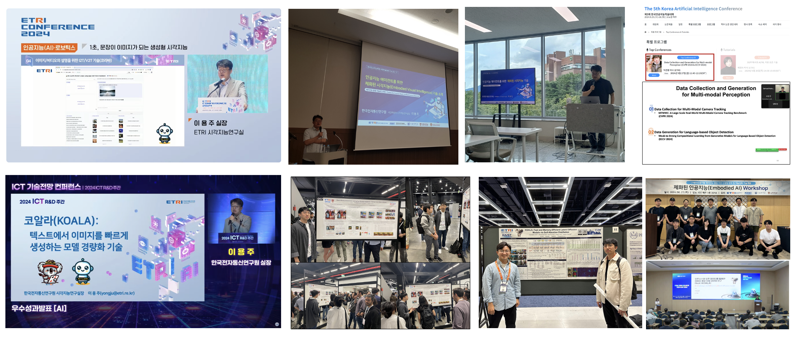
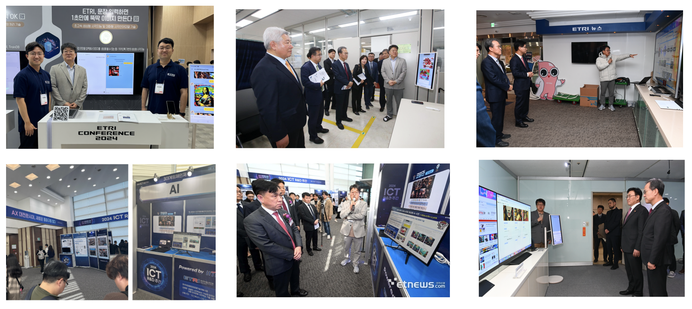
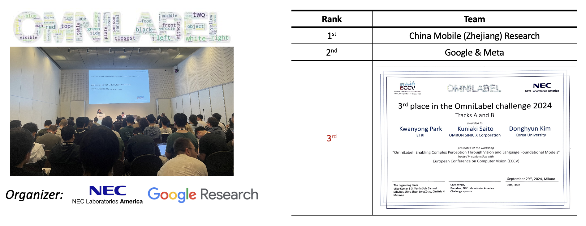

Ji-Hye Oh,Deok-Joong Lee, Chang-Hoon Ji, Dong-Hee Shin, Ji-Wung Han, Young-Han Son, Tae-Eui Kam, "Graph-based Conditional Generative Adversarial Networks for Major Depressive Disorder Diagnosis with Synthetic functional Brain Network Generation", IEEE Journal of Biomedical and Health Informatics
Young-Han Son,Dong-Hee Shin, Tae-Eui Kam, "FTMMR: Fusion Transformer for Integrating Multiple Molecular Representations", IEEE Journal of Biomedical and Health Informatics
Deok-Joong Lee,Dong-Hee Shin,Young-Han Son,Ji-Wung Han,Ji-Hye Oh,Da-Hyun Kim,Ji-Hoon Jeong,Tae-Eui Kam, "Spectral Graph Neural Network-based Multi-atlas Brain Network Fusion for Major Depressive Disorder Diagnosis", IEEE Journal of Biomedical and Health Informatics
Chang-Hoon Ji,Dong-Hee Shin, Young-Han Son, Tae-Eui Kam, "Sparse Graph Representation Learning based on Reinforcement Learning for Personalized Mild Cognitive Impairment (MCI) Diagnosis", IEEE Journal of Biomedical and Health Informatics
Ji-Wung Han,Soyeon Bak, Jun-Mo Kim, WooHyeok Choi, Dong-Hee Shin, Young-Han Son, Tae-Eui Kam, "META-EEG: Meta-learning-based class-relevant EEG representation learning for zero-calibration brain–computer interfaces", Expert Systems with Applications
Dong-Hee Shin,Young-Han Son, Jun-Mo Kim, Hee-Jun Ahn, Jun-Ho Seo, Chang-Hoon Ji, Ji-Wung Han, Byung-Jun Lee, Dong-Ok Won, Tae-Eui Kam, "MARS: Multi-Agent Reinforcement Learning for Spatial-Spectral and Temporal Feature Selection in EEG-based BCI", IEEE Transactions on Systems, Man, and Cybernetics
Taerim Yoon,Yoonbyung Chai, Yeonwoo Jang, Hajun Lee, Junghyo Kim, Jaewoon Kwon, Jiyun Kim, Sungjoon Choi, "Kinematics-Informed Neural Networks: Enhancing Generalization Performance of Soft Robot Model Identification", IEEE Robotics and Automation Letters
Jeongeun Park,Taemoon Jeong, Hyeonseong Kim , Taehyun Byun , Seungyoun Shin, Keunjun Choi , Jaewoon Kwon , Taeyoon Lee , Matthew Pan , and Sungjoon Choi, "Towards Embedding Dynamic Personas in Interactive Robots: Masquerading Animated Social Kinematic (MASK)", IEEE Robotics and Automation Letters
Sanghun Jeon,Jieun Lee, Dohyeon Yeo, Yong-Ju Lee, SeungJun Kim, "Multimodal audiovisual speech recognition architecture using a three-feature multi-fusion method for noise-robust systems", ETRI Journal
Taehyeon Kim,Donggyu Kim, Se-Young Yun, "FLR: Label-Mixture Regularization for Federated Learning with Noisy Labels", TMLR
Jeongeun Park,Seungwon Lim, Joonhyung Lee, Sangbeom Park, Minsuk Chang, Youngjae Yu, Sungjoon Choi, "CLARA: Classifying and Disambiguating User Commands for Reliable Interactive Robotic Agents", IEEE Robotics and Automation Letters
Fanchen Bu, Shinhwan Kang, Kijung Shin, "Interplay between topology and edge weights in real‐world graphs: concepts, patterns, and an algorithm", Data Mining and Knowledge Discovery
Sunwoo Kim, Minyoung Choe, Jaemin Yoo, Kijung Shin, "Reciprocity in directed hypergraphs: measures, findings, and generators", Data Mining and Knowledge Discovery
Manh Tuan Do, Kijung Shin, "Improving the core resilience of real‐world hypergraphs", Data Mining and Knowledge Discovery
Fanchen Bu, Geon Lee, Kijung Shin, "Hypercore decomposition for non‐fragile hyperedges: concepts, algorithms, observations, and applications", Data Mining and Knowledge Discovery
Ji-Wung Han, Soyeon Bak, Jun-Mo Kim, WooHyeok Choi, Dong-Hee Shin, Young-Han Son, Tae-Eui Kam, "META-EEG: Meta-learning-based class-relevant EEG representation learning for zero-calibration brain-computer interfaces", Expert Systems With Applications
[International Conferences]
Sunwoo Kim,Shinhwan Kang, Fanchen Bu, Soo Yong Lee, Kijung Shin,"HypeBoy: Generative Self-Supervised Representation Learning on Hypergraphs", ICLR 2024
Byeonghwi Kim,Minhyuk Seo, Jonghyun Choi,"Online Continual Learning for Interactive Instruction Following Agents", ICLR 2024
Dong-Hee Shin,Young-Han Son, Deok-Joong Lee, Ji-Wung Han,"DyMol: Dynamic Many-Objective Molecular Optimization with Objective Decomposition and Progressive Optimization", ICLR 2024
Kwanyong Park,Kuniaki Saito, Donghyun Kim, "Learning Compositional Language-based Object Detection with Diffusion-based Synthetic Data", CVPR 2024
Dongyeong Hwang,Hyunju Kim, Sunwoo Kim, Kijung Shin, "FlowerFormer: Empowering Neural Architecture Encoding using a Flow-aware Graph Transformer", CVPR 2024
Mu Cai,Haotian Liu, Dennis Park, Siva Karthik Mustikovela, Gregory P. Meyer, Yuning Chai, Yong Jae Lee, "ViP-LLaVA: Making Large Multimodal Models Understand Arbitrary Visual Prompts", CVPR 2024
Minhyuk Seo,Hyunseo Koh, Wonje Jeung, Minjae Lee, San Kim, Hankook Lee, Sungjun Cho, Sungik Choi, Hyunwoo Kim, Jonghyun Choi, "Learning Equi-angular Representations for Online Continual Learning", CVPR 2024
Fanchen Bu,Hyeonsoo Jo, Soo Yong Lee, Sungsoo Ahn, Kijung Shin, "Tackling Prevalent Conditions in Unsupervised Combinatorial Optimization: Cardinality, Minimum, Covering, and More", ICML 2024
Soo Yong Lee,Sunwoo Kim, Fanchen Bu, Jaemin Yoo, Jiliang Tang, Kijung Shin, "Feature Distribution on Graph Topology Mediates the Effect of Graph Convolution: Homophily Perspective", ICML 2024
Jongwoo Ko,Sungnyun Kim, Tianyi Chen, Se-Young Yun, "DistiLLM: Towards Streamlined Distillation for Large Language Models", ICML 2024
Kwanyong Park,Kuniaki Saito, Donghyun Kim, "Weak-to-Strong Compositional Learning from Generative Models for Language-based Object Detection, ECCV 2024
Yuheng Li,Haotian Liu, Mu Cai, Yijun Li, Eli Shechtman, Zhe Lin, Yong Jae Lee, Krishna Kumar Singh, "Removing Distributional Discrepancies in Captions Improves Image-Text Alignment", ECCV 2024
Taewoong Kim,Cheolhong Min, Byeonghwi Kim, Jinyeon Kim, Wonje Jeung, Jonghyun Choi, "ReALFRED: An Embodied Instruction Following Benchmark in Photo-Realistic Environments", ECCV 2024
Daechul Ahn,Yura Choi, Youngjae Yu, Dongyeop Kang, Jonghyun Choi, "Tuning Large Multimodal Models for Videos using Reinforcement Learning from AI Feedback", ACL Findings 2024
Bocheng Zou,Mu Cai, Jianrui Zhang, Yong Jae Lee, "VGBench: Evaluating Large Language Models on Vector Graphics Understanding and Generation", EMNLP 2024
Eulin Yi,Taehyeon Kim, Hongseok Jeoung, Du-SEong Chang, Se-Young Yun, "Towards Fast Multilingual LLM Inference Speculative Decoding and Specialized Drafters", EMNLP 2024
Thao Nguyen,Haotian Liu Yuheng Li Mu Cai Utkarsh Ojha Yong Jae Lee, "Yo’LLaVA: Your Personalized Language and Vision Assistant", NerurIPS 2024
Minu Kim,Yongsik Lee, Sehyeok Kang, Jihwan Oh, Song Chong, Se-Young Yun, "Preference Alignment with Flow Matching", NerurIPS 2024
Namgyu Ho,Sangmin Bae, Taehyeon Kim, Hyunjik Jo, Yireun Kim, Tal Schuster, Adam Fisch, James Thorne, Se-Young Yun, "Block Transformer: Global-to-Local Language Modeling for Fast Inference", NerurIPS 2024
Youngwan Lee,Kwanyong Park, Yoorhim Cho, Yong-Ju Lee, Sung Ju Hwang, "KOALA: Empirical Lessons Toward Memory-Efficientand Fast Diffusion Models for Text-to-Image Synthesis", NerurIPS 2024
Kwanyong Park,Youngwan Lee, Yong-Ju Lee, "A Multimodal Chain of Tools for Described Object Detection", NerurIPS 2024
Geon Lee,Soo Yong Lee, Kijung Shin, "VilLain: Self-Supervised Learning on Homogeneous Hypergraphs without Features via Virtual Label Propagation", WWW
Manh Tuan Do,Kijung Shin, "Unsupervised Alignment of Hypergraphs with Different Scales", KDD
Sumyeong Ahn,Sihyeon Kim, Jongwoo Ko, Se-Young Yun, "Fine-tuning Pre-trained Models for Robustness Under Noisy Labels", IJCAI 2024
Ji-Hye Oh,Eunjung Jo, "A Comparative Study: Enhancing Conditional Generative Adversarial Networks for Functional Connectivity Synthesis in Major Depressive Disorder", ICPRAI 2024
Joonhyung Lee,Sangbeom Park, Jeongeun Park, Kyungjae Lee, and Sungjoon Choi, "SPOTS: Stable Placement of Objects with Reasoning in Semi-Autonomous Teleoperation Systems", ICRA 2024
Taemoon Jeong,Sankalp Yamsani, Jooyoung Hong, Kyungseo Park, Joohyung Kim, Sungjoon Choi, "Generating Realistic Sound with Prosthetic Hand: A Reinforcement Learning Approach", EMBC 2024
Seungyup Ka,Taemoon Jeong, Sunwoo Kim, Sankalp Yamsani, Joohyung Kim, Sungjoon Choi, "Towards Natural Prosthetic Hand Gestures: A Common-Rig and Diffusion Inpainting Pipeline", EMBC 2024
Jinyeon Kim,Cheolhong Min, Byeonghwi Kim, Jonghyun Choi, "Pre-emptive Action Revision by Environmental Feedback for Embodied Instruction Following Agents", CoRL 2024
Jeongeun Park,Jefferson Silveria, Matthew Pan, Sungjoon Choi, "Towards Text-based Human Search and Approach using a Robot Dog", ROMAN 2024
Minh-Long Luu, Zeyi Huang ,Eric P. Xing, Yong Jae Lee, Haohan Wang, "Expeditious Saliency-guided Mix-up through Random Gradient Thresholding", AAAI 2023
Sumyeong Ahn, Se-Young Yun, "Denoising after Entropy-based DebiasingRobust Training Method for Dataset Bias with Noisy Labels", AAAI 2023
Suvaansh Bhambri, Byeonghwi Kim, Jonghyun Choi, "Multi-level Compositional Reasoning for Interactive Instruction Following", AAAI 2023
Hyunseo Koh, Minhyuk Seo, Jihwan Bang, Hwanjun Song, Deokki Hong, Seulki Park, Jung-Woo Ha, Jonghyun Choi, "ONLINE BOUNDARY-FREE CONTINUAL LEARNING BY SCHEDULED DATA PRIOR", ICLR 2023
Sumyeong Ahn, Jongwoo Ko, Se-Young Yun, "CUDA: CURRICULUM OF DATA AUGMENTATION FOR LONG-TAILED RECOGNITION", ICLR 2023
Jongwoo Ko, Sumyeong Ahn, Se-Young Yun, "EFFICIENT UTILIZATION OF PRE-TRAINED MODEL FOR LEARNING WITH NOISY LABELS", ICLR 2023
Sungnyun Kim, Sangmin Bae, Se-Young Yun, "Coreset Sampling from Open-Set for Fine-Grained Self-Supervised Learning", CVPR 2023
SangMook Kim, Sangmin Bae, Hwanjun Song, Se-Young Yun, "Re-thinking Federated Active Learning based on Inter-class Diversity", CVPR 2023
Soo Yong Lee, Fanchen Bu, Jaemin Yoo, Kijung Shin, Towards Deep Attention in Graph Neural Networks: Problems and Remedies", ICML 2023
Daechul Ahn, Daneul Kim, Gwangmo Song, Seung Hwan Kim, Honglak Lee, Dongyeop Kang, Jonghyun Choi, "Story Visualization by Online Text Augmentation with Context Memory", ICCV 2023
Byeonghwi Kim ,Jinyeon Kim, Yuyeong Kim, Cheolhong Min, Jonghyun Choi, "Context-Aware Planning and Environment-Aware Memory for Instruction Following Embodied Agents", ICCV 2023
Zeyi Huang, Andy Zhou, Zijian Lin, Mu Cai, Haohan Wang, Yong Jae Lee, "A Sentence Speaks a Thousand Images:Generalization through Distilling CLIP with Language Guidance", ICCV 2023
Sunwoo Kim, Fanchen Bu, Minyoung Choe, Jaemin Yoo, Kijung Shin, "How Transitive Are Real-World Group Interactions? - Measurement and Reproduction", KDD 2023
Fanchen Bu, Kijung Shin, "On Improving the Cohesiveness of Graphs by Merging Nodes:Formulation, Analysis, and Algorithms", KDD 2023
Hyunju Kim, Jihoon Ko, Fanchen Bu, Kijung Shin, "Characterization of Simplicial Complexes by Counting Simplets Beyond Four Nodes", WWW 2023
Hyeonsoo Jo, Fanchen Bu, Kijung Shin, "Robust Graph Clustering via Meta Weighting for Noisy Graphs", CIKM 2023
Seungyoun Shin, Joonhyung Lee, Junhyug Noh, and Sungjoon Choi, "Robust Detection for Autonomous Elevator Boarding using a Mobile Manipulator", ACPR 2023
Seungyoun Shin, Wonho Bae, Junhyug Noh, and Sungjoon Choi, "Towards Explainable Computer Vision Methods via Uncertainty Activation Map", ACPR 2023
Dahyun Kim, Yong-Ju Lee, “Improving Embodied Instruction Following with Deterministic Methods”, ICACT 2023
SangMook Kim, SangMin Bae, Se-Young Yun, Hwanjun Song, “LG-FAL : Federated Active Learning Strategy using Local and Global Models”, ICML 2022
SangMook Kim, Wonyoung Shin, Soohyuk Jang, Hwanjun Song, Se-Young Yun, “FedRN: Exploiting k-Reliable Neighbors Towards Robust Federated Learning”, CIKM 2022
Jaehoon Oh, Sungnyun Kim, Namgyu Ho, Jin-Hwa Kim, Hwanjun Son, Se-Young Yun, “Understanding Cross-Domain Few-Shot Learning Based on Domain Similarity and Few-Shot Difficulty”, NeurIPS 2022
Chunyuan Li, Haotian Liu, Liunian Harold Li, Pengchuan Zhang, Jyoti Aneja, Jianwei Yang, Ping Jin, Houdong Hu, Zicheng Liu, Yong Jae Lee, Jianfeng Gao, “ELEVATER: A Benchmark and Toolkit for Evaluating Language-Augmented Visual Models”, NeurIPS 2022,
Curie Kim, “Self-Supervised 3D Object Detection from Monocular Pseudo-LiDAR”, MFI 2022
ETRI/IITP 컨퍼런스, CVPR/ECCV, 한국인공지능학회/GIST-ETRI AI 워크숍/한국인공지능학술대회/대한임베디드공학회 등

ETRI 컨퍼런스/ICT R&D 컨퍼런스 전시 2건, 방통위원장/NST이사장/과기부 2차관/과기부장관 님 기술 시연

글로벌 챌린지 3위 입상(ECCV ‘24 : OmniLabel Challenge)

Workshop on Computer Vision in the Wild, ECCV 2022,[Link]
CLARA Robot, Ko-LLaVA, and KOALA Demo
[Open SW]
ELEVATER(Evaluation of Language-augmented Visual Task-level Transfer) ,[Link]
Acknowledgement
This work was supported by Institute for Information &
Communications Technology Promotion (IITP) grant funded
by the Korea government (MSIT) [No.2022-0-00871, Development of AI Autonomy and Knowledge Enhancement for AI Agent Collaboration], [No. RS-2022-00187238, Development of Large Korean Language Model Technology for Efficient Pre-training]